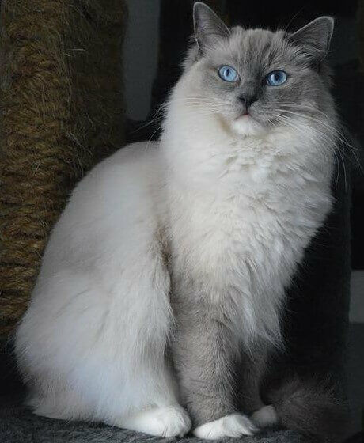
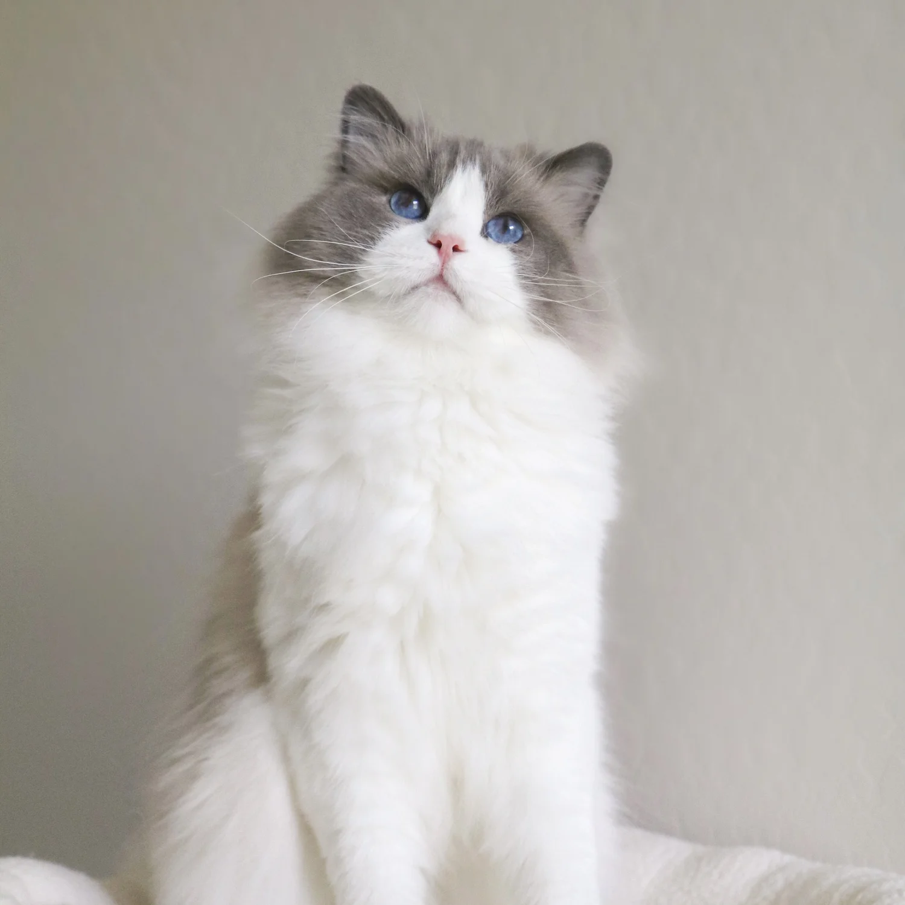
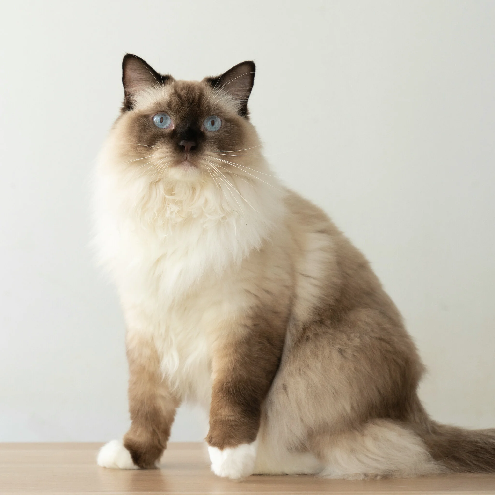

About the Breed
Ragdolls are one of the most affectionate and gentle cat breeds. They are large, muscular cats with striking blue eyes and semi-long, silky coats. Their personality is calm and laid-back, and they often follow their owners around like a loyal companion. Unlike many other cats, Ragdolls tend to go limp when picked up, which is how they earned their name "Ragdoll". They are excellent family pets, good with children and other animals, and enjoy interactive play.
Ragdolls are also known for their intelligence and curiosity. They often enjoy exploring their environment but remain friendly and non-aggressive. They are social cats who thrive on human attention and can develop strong bonds with their family members.
Coat Colors and Patterns
Ragdolls come in several beautiful colors and patterns. Below are the most common colors:
- Seal: Dark brown points on ears, face, paws, and tail. Creamy white body.
- Blue: Grayish-blue points with a lighter body.
- Chocolate: Rich milk-chocolate colored points with a cream body.
- Lilac: Soft, pale grayish-pink points with an off-white body.
- Red: Warm reddish points with a lighter cream body.
- Cream: Pale cream points with a slightly lighter body.
Ragdolls have three main patterns: Colorpoint, Mitted, and Bicolor. Each pattern gives them a unique and stunning look. Colorpoints have solid color on the points, Mitted cats have white paws, and Bicolor cats have white inverted V on the face and white belly.
Photos of Ragdolls


